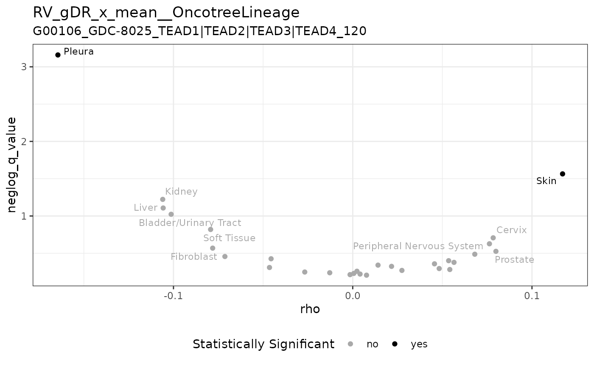
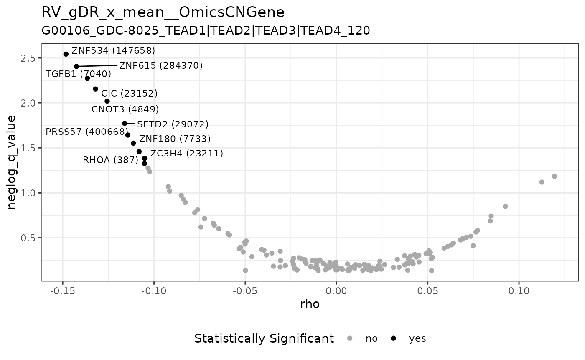
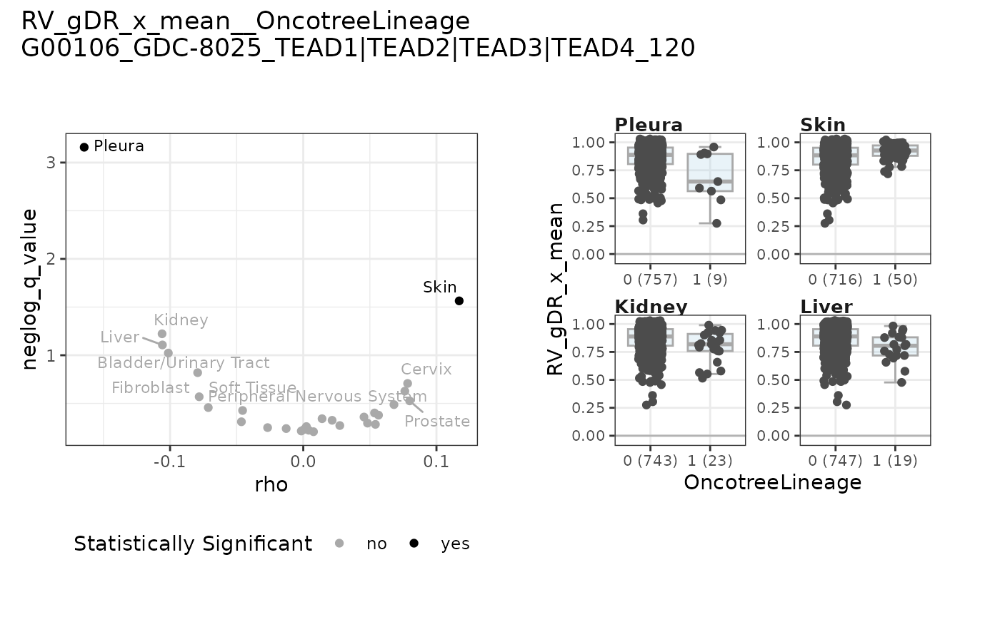
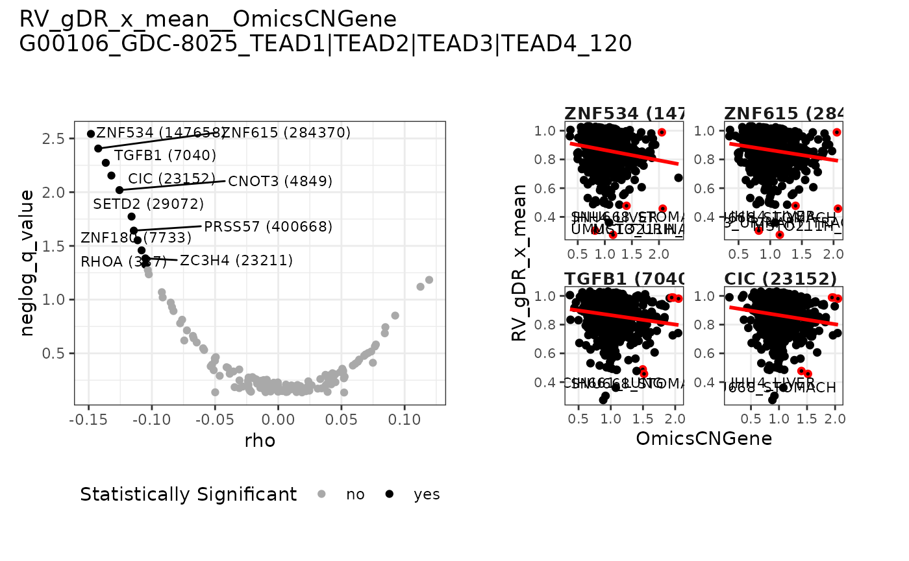
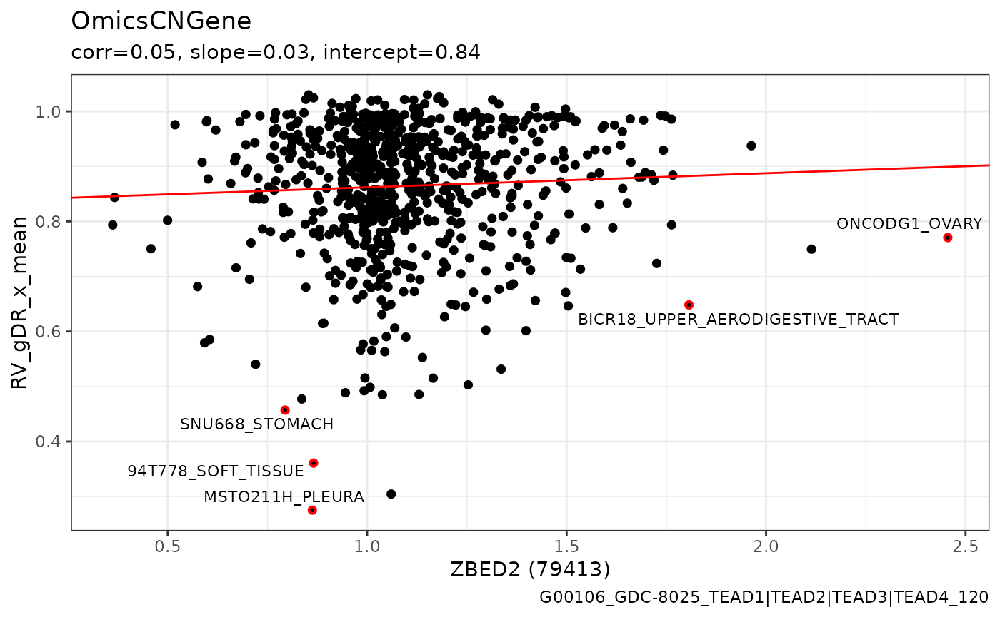
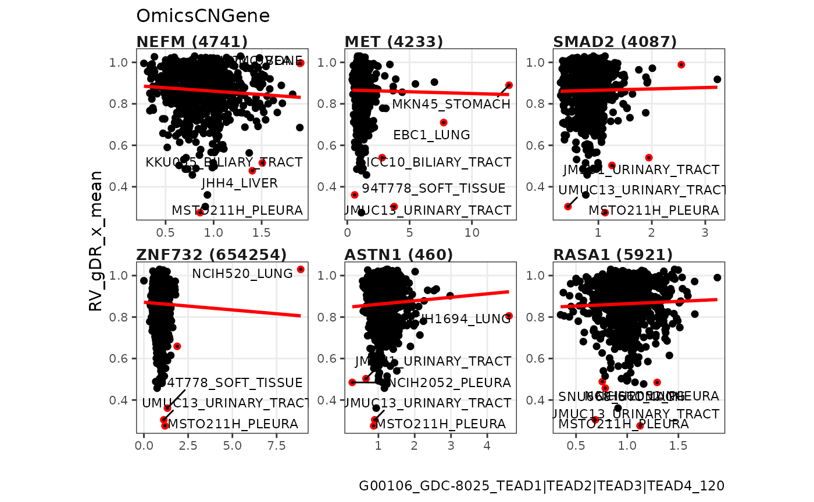
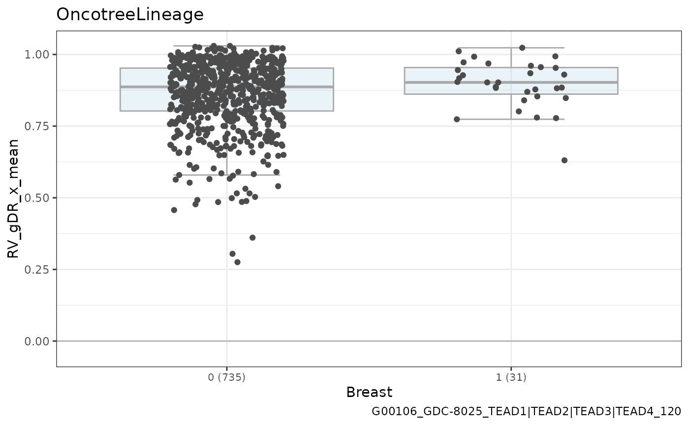
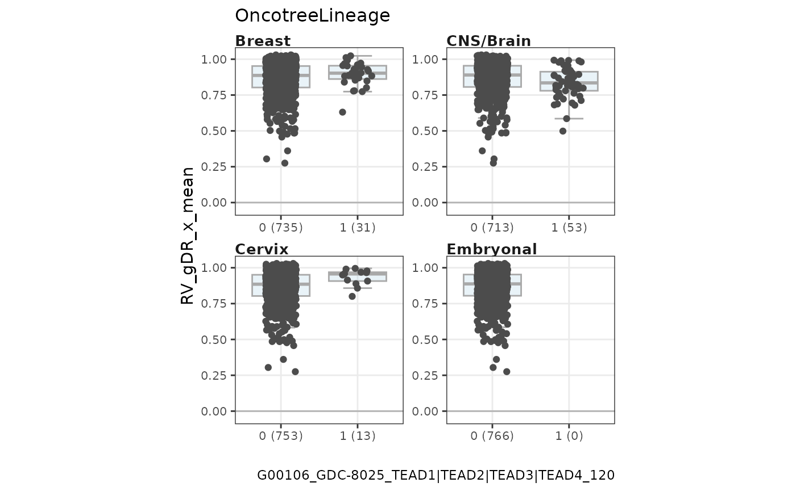
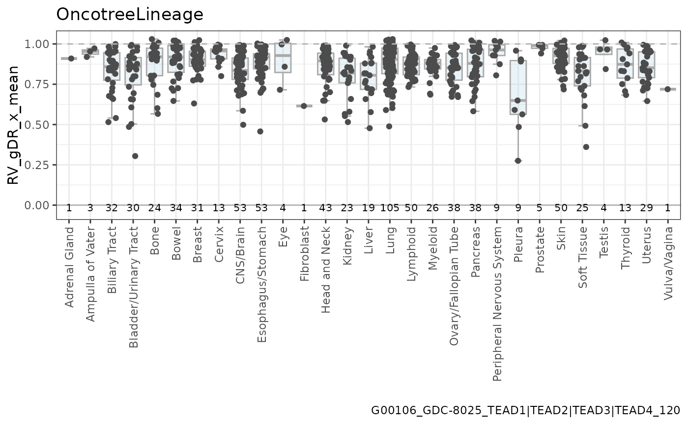

Content
The gDRplots package stores functions for gDR static
visualizations and their dedicated helpers. The package allows users to
visualize different metrics for combinations of drugs and cell lines of
interest, both during and after processing.
The gDRplots package supports the following metrics:
| Metrics | Definition |
|---|---|
| GR value | Normalized Growth Rate (GR) value; calculated by normalizing treated samples with the corresponding vehicle-treated samples. |
| Relative Viability | (RV); calculated by normalizing treated samples with the corresponding vehicle-treated samples. |
Assumptions
- input data
All plot functions require as an input data.table
representation of the data in selected assay with added information from
colData created based on the gDR data model
(MultiAssayExperiment). such format is provided by the
gDRutils::convert_se_assay_to_dt function.
More details about the gDR data model user can find in the gDRcore package.
- function naming convention
If a function is dedicated to only one type of experiment - it will
be marked in the name with the symbol sa for an
experiment with a single-agent (e.g. pheatmap_with_anno_sa)
or combo - for a combined experiment
(e.g. pheatmap_with_anno_combo).
- function output
Basically all functions return a ggplot object,
except for a few that return a pheatmap object. But
this is indicated in the function names and description,
e.g. pheatmap_qc, pheatmap_with_anno_sa, and
pheatmap_with_anno_combo.
There is a group of functions that return a panel
with a group of basic plots. The name of these functions always contains
a word panel. E.g. a basic ggplot object - one
heatmap for selected drug, co-drug and one cell line - is returned
by heatmap_combo_with_isoref. And
heatmap_combo_with_isoref_panel returns a ggplot object
with a panel with heatmaps for selected drug, co-drug and list of
cell lines.
Used data:
- single-agent experiment (synthetic data)
mae <- get_synthetic_data("combo_matrix")
sa_name <- get_supported_experiments("sa")
se_sa <- mae[[sa_name]]
dt_norm_sa <-
convert_se_assay_to_dt(se = se_sa,
assay_name = "Normalized",
unify_metadata = TRUE,
merge_additional_variables = TRUE)
dt_metrics_sa <-
convert_se_assay_to_dt(se = se_sa,
assay_name = "Metrics",
unify_metadata = TRUE,
merge_additional_variables = TRUE)
dt_average_sa <-
convert_se_assay_to_dt(se = se_sa,
assay_name = "Averaged",
unify_metadata = TRUE,
merge_additional_variables = TRUE)
dt_metrics_sa_capped <-
cap_assay_infinities(conc_assay_dt = dt_average_sa,
assay_dt = dt_metrics_sa,
experiment_name = sa_name,
col = "xc50",
capping_fold = 5)- codilution experiment (synthetic data)
mae <- get_synthetic_data("combo_codilution_small")
cd_name <- get_supported_experiments("cd")
se_cd <- mae[[cd_name]]
dt_norm_cd <-
convert_se_assay_to_dt(se = se_cd,
assay_name = "Normalized",
unify_metadata = TRUE,
merge_additional_variables = TRUE)
dt_metrics_cd <-
convert_se_assay_to_dt(se = se_cd,
assay_name = "Metrics",
unify_metadata = TRUE,
merge_additional_variables = TRUE)
dt_average_cd <-
convert_se_assay_to_dt(se = se_cd,
assay_name = "Averaged",
unify_metadata = TRUE,
merge_additional_variables = TRUE)- combination experiment (synthetic data)
mae <- get_synthetic_data("combo_matrix")
combo_name <- get_supported_experiments("combo")
se_combo <- mae[[combo_name]]
dt_norm_combo <-
convert_se_assay_to_dt(se = se_combo,
assay_name = "Normalized",
unify_metadata = TRUE,
merge_additional_variables = TRUE)
dt_metrics_combo <-
convert_se_assay_to_dt(se = se_combo,
assay_name = "Metrics",
unify_metadata = TRUE,
merge_additional_variables = TRUE)
dt_average_combo <-
convert_se_assay_to_dt(se = se_combo,
assay_name = "Averaged",
unify_metadata = TRUE,
merge_additional_variables = TRUE)
dt_scores <-
convert_se_assay_to_dt(se = se_combo,
assay_name = "scores",
unify_metadata = TRUE,
merge_additional_variables = TRUE)
dt_excess <-
convert_se_assay_to_dt(se = se_combo,
assay_name = "excess",
unify_metadata = TRUE,
merge_additional_variables = TRUE)
dt_isobolograms <-
convert_se_assay_to_dt(se = se_combo,
assay_name = "isobolograms",
unify_metadata = TRUE,
merge_additional_variables = TRUE)- single-agent experiment for PRISM data
mae_prism <- get_synthetic_data("prism")
sa_name <- get_supported_experiments("sa")
se_sa_prism <- mae_prism[[sa_name]]
dt_norm_prism_sa <-
convert_se_assay_to_dt(se = se_sa_prism,
assay_name = "Normalized")
dt_metrics_prism_sa <-
convert_se_assay_to_dt(se = se_sa_prism,
assay_name = "Metrics")
dt_average_prism_sa <-
convert_se_assay_to_dt(se = se_sa_prism,
assay_name = "Averaged")
dt_metrics_prism_sa_capped <-
cap_assay_infinities(conc_assay_dt = dt_average_prism_sa,
assay_dt = dt_metrics_prism_sa,
experiment_name = sa_name,
col = "xc50",
capping_fold = 5)TIP
It is highly recommended to use
convert_se_assay_to_dt with
unify_metadata = TRUE and
merge_additional_variables = TRUE. This prevents errors
caused by non-unique combinations of values in the DrugName
and CellLineName columns.
Dose Response Plots
The dose-response plots are classic visualizations of drug response curves in a consolidated way.
The overview with many curves presented on the same scale gives the user a comprehensive view of the dataset. This is particularly useful in large compound screening datasets, where a drug with a universal resistance pattern across all cell lines can be easily identified. The compound generates different sigmoid curves, suggesting inhibitory or cytotoxic effects, which are worth exploring further.
Single-agent Data
The plot_dose_response_sa function is dedicated to single-agent experiments.
Users can also use plot_dose_response_sa_by_CLs or plot_dose_response_sa_by_drugs to get a list of dose-response plots by cell line names or by drugs accordingly.
plot_dose_response_sa(
dt_metrics = dt_metrics_sa,
dt_average = dt_average_sa,
selection_name = "drug_002",
group_var = "CellLineName",
group_names = c("cellline_BC", "cellline_FD", "cellline_JE"))
Combination Data
The plot_dose_response_combo function is dedicated to combination experiments.
Users can also use plot_dose_response_combo_panel to get a panel with dose-response plots by selected cell line name.
plot_dose_response_combo(
dt_average = dt_average_combo,
drug1_name = "drug_011",
drug2_name = "drug_021",
cl_name = "cellline_NE")
Metrics plot
A heat map built for all combinations of drugs and cell lines, colored according to the value of the selected metric, is a very common way to explore datasets. Boxplots are also commonly used to explore the distribution of metric values across interest groups.
Single-agent Data
The pheatmap_with_anno_sa function is dedicated to single-agent experiments to generate a heatmap.
Additionally, rows are annotated by Tissue and columns -
by drug MOA. Users can also use their own annotations.
This function returns the heatmap itself and a list of tables with data: a matrix and annotation vectors.
annotation_manual_col <-
unique(dt_metrics_sa[, c("CellLineName", "Tissue"), with = FALSE])
annotation_manual_row <-
unique(dt_metrics_sa[, c("DrugName", "drug_moa"), with = FALSE])
output <- pheatmap_with_anno_sa(
dt_metrics = dt_metrics_sa,
dt_metrics_capped = dt_metrics_sa_capped,
annotation_row = annotation_manual_row,
annotation_col = annotation_manual_col)
hm <- output[["heatmap"]]
ggpubr::as_ggplot(hm[["gtable"]])
knitr::kable(output[["data"]][["matrix"]], escape = FALSE)| CellLineName | drug_001 | drug_002 | drug_011 | drug_021 | drug_026 | drug_031 |
|---|---|---|---|---|---|---|
| cellline_BC | 0.0998809 | 0.5089319 | 0.3520659 | Inf | Inf | Inf |
| cellline_FD | 0.0168777 | 0.0185318 | 0.0901472 | Inf | Inf | Inf |
| cellline_JE | 0.1519077 | 0.2153215 | 0.3027943 | Inf | Inf | Inf |
| cellline_NE | 0.0146204 | 0.0405016 | 0.1531716 | Inf | Inf | Inf |
| cellline_AA | 0.0807604 | Inf | 0.0519747 | Inf | Inf | Inf |
| cellline_EA | Inf | Inf | 0.0679622 | Inf | Inf | Inf |
| cellline_IB | 0.0124117 | 0.0027211 | 0.0256661 | Inf | Inf | Inf |
| cellline_MC | 0.0424780 | 0.0135922 | 0.0207424 | Inf | Inf | Inf |
The plot_boxplot_metric_sa_by_CLs and
plot_boxplot_metric_sa_by_drugs functions are dedicated
to single-agent experiments to generate boxplots grouped by
CellLineName or DrugName, respectively.
plot_boxplot_metric_sa_by_CLs(dt_metrics_sa_capped)
plot_boxplot_metric_sa_by_drugs(dt_metrics_sa_capped)
Additionally, user can colored boxplots by secondary variable - by
Tissue or drug MOA respectively.
plot_boxplot_metric_sa_by_CLs(dt_metrics_sa_capped,
grouped_flag = TRUE)
plot_boxplot_metric_sa_by_drugs(dt_metrics_sa_capped,
grouped_flag = TRUE)
Or user can colored points by opposite primary variable - by
DrugName or CellLineName respectively.
plot_boxplot_metric_sa_by_CLs(dt_metrics_sa_capped,
colored_pts_flag = TRUE)
plot_boxplot_metric_sa_by_drugs(dt_metrics_sa_capped,
colored_pts_flag = TRUE)
There is also a possibility to generate boxplot grouped by chosen
variable for dedicated DrugName or
CellLineName. Additionally, the n-bottom points are
colored.
plot_boxplot_metric_sa_by_grp(dt_metrics_sa_capped,
selection_var = "DrugName",
selection_name = "drug_002",
group_var = "Tissue",
named_n = 3)
plot_boxplot_metric_sa_by_grp(dt_metrics_sa_capped,
selection_var = "CellLineName",
selection_name = "cellline_BC",
group_var = "drug_moa",
named_n = 3)
Co-dilution Data
The pheatmap_with_anno_cd function is dedicated to co-dilution experiments to generate a heatmap.
Additionally, rows are annotated by Tissue and columns -
by drug MOA and drug MOA 2. Users can also use
their own annotations.
This function returns the heatmap itself and a list of tables with data: a matrix and annotation vectors.
annotation_manual_col <-
unique(dt_metrics_cd[, c("CellLineName", "Tissue"), with = FALSE])
annotation_manual_row <-
unique(dt_metrics_cd[, c("DrugName", "DrugName_2", "Concentration_2",
"drug_moa", "drug_moa_2"), with = FALSE])
output <- pheatmap_with_anno_cd(
dt_metrics = dt_metrics_cd,
annotation_row = annotation_manual_row,
annotation_col = annotation_manual_col)
hm <- output[["heatmap"]]
ggpubr::as_ggplot(hm[["gtable"]])
knitr::kable(output[["data"]][["matrix"]], escape = FALSE)| CellLineName | drug_002 x drug_001__5e-04 | drug_002 x drug_001__0.00158113883008419 | drug_002 x drug_001__0.005 | drug_002 x drug_001__0.0158113883008419 | drug_002 x drug_001__0.05 | drug_002 x drug_001__0.158113883008419 | drug_002 x drug_001__0.5 | drug_002 x drug_001__1.58113883008419 | drug_002 x drug_001__5 | drug_003 x drug_001__5e-04 | drug_003 x drug_001__0.00158113883008419 | drug_003 x drug_001__0.005 | drug_003 x drug_001__0.0158113883008419 | drug_003 x drug_001__0.05 | drug_003 x drug_001__0.158113883008419 | drug_003 x drug_001__0.5 | drug_003 x drug_001__1.58113883008419 | drug_003 x drug_001__5 | drug_004 x drug_001__5e-04 | drug_004 x drug_001__0.00158113883008419 | drug_004 x drug_001__0.005 | drug_004 x drug_001__0.0158113883008419 | drug_004 x drug_001__0.05 | drug_004 x drug_001__0.158113883008419 | drug_004 x drug_001__0.5 | drug_004 x drug_001__1.58113883008419 | drug_004 x drug_001__5 |
|---|---|---|---|---|---|---|---|---|---|---|---|---|---|---|---|---|---|---|---|---|---|---|---|---|---|---|---|
| cellline_AA | Inf | Inf | Inf | -Inf | -Inf | -Inf | -Inf | -Inf | -Inf | Inf | Inf | Inf | Inf | Inf | Inf | Inf | Inf | Inf | Inf | Inf | Inf | Inf | Inf | -Inf | -Inf | -Inf | -Inf |
| cellline_BA | Inf | Inf | -Inf | -Inf | -Inf | -Inf | -Inf | -Inf | -Inf | Inf | Inf | Inf | -Inf | -Inf | -Inf | -Inf | -Inf | -Inf | Inf | Inf | Inf | Inf | Inf | Inf | Inf | Inf | Inf |
Combination Data
The pheatmap_with_anno_combo function is dedicated to combination experiments to generate a heatmap.
Additionally, rows are annotated by Tissue and columns -
by drug MOA and co-drug MOA. Users can also
use their own annotations.
This function returns the heatmap itself and a list of tables with data: a matrix and annotation vectors.
annotation_manual_col <-
unique(dt_scores[, c("CellLineName", "Tissue"), with = FALSE])
annotation_manual_row <-
unique(dt_scores[, c("DrugName", "DrugName_2",
"drug_moa", "drug_moa_2"), with = FALSE])
output <- pheatmap_with_anno_combo(
dt_scores = dt_scores,
annotation_row = annotation_manual_row,
annotation_col = annotation_manual_col)
hm <- output[["heatmap"]]
ggpubr::as_ggplot(hm[["gtable"]])
knitr::kable(output[["data"]][["matrix"]], escape = FALSE)| CellLineName | drug_001 x drug_021 | drug_002 x drug_021 | drug_001 x drug_026 | drug_002 x drug_026 | drug_001 x drug_031 | drug_002 x drug_031 | drug_011 x drug_021 | drug_011 x drug_026 | drug_011 x drug_031 |
|---|---|---|---|---|---|---|---|---|---|
| cellline_BC | 0.1188462 | 0.1696683 | 0.0578628 | 0.1177968 | 0.0040957 | 0.0075757 | 0.1769825 | 0.1073843 | 0.0032548 |
| cellline_FD | 0.2229644 | 0.2343402 | 0.0474401 | 0.0970419 | 0.0035730 | 0.0108944 | 0.2645697 | 0.0848330 | 0.0010406 |
| cellline_JE | 0.2945933 | 0.3395875 | 0.0222295 | 0.0278835 | 0.0113068 | 0.0063923 | 0.3465100 | 0.0232805 | 0.0137852 |
| cellline_NE | 0.1173599 | 0.2051338 | 0.0132184 | 0.0161967 | 0.0077477 | 0.0088354 | 0.3267055 | 0.0074874 | 0.0005292 |
| cellline_AA | 0.0411628 | 0.0488968 | 0.1774548 | 0.1905333 | 0.0266574 | 0.0082791 | 0.0359905 | 0.1724894 | 0.0213411 |
| cellline_EA | 0.1468862 | 0.1379605 | 0.0279377 | 0.0287112 | 0.0137568 | 0.0069382 | 0.1167003 | 0.0118499 | 0.0010357 |
| cellline_IB | 0.1078013 | 0.0528896 | 0.0259983 | 0.0282770 | 0.0197343 | 0.0381455 | 0.1690969 | 0.0338534 | 0.0342115 |
| cellline_MC | 0.2655205 | 0.1699915 | 0.0032402 | 0.0315052 | -0.0027163 | 0.0074578 | 0.2030117 | 0.0311446 | 0.0127269 |
The plot_boxplot_metric_sa_by_CLs and
plot_boxplot_metric_sa_by_drugs functions are dedicated
to single-agent experiments to generate boxplots grouped by
CellLineName or combination of DrugName with
DrugName_2, respectively.
Additionally, for boxplots grouped by CellLineName user
can colored boxplots by secondary variable - by Tissue.
plot_boxplot_metric_combo_by_CLs(dt_scores)
plot_boxplot_metric_combo_by_drugs(dt_scores)
There is also a possibility to generate boxplot grouped by chosen
variable for dedicated DrugName or
CellLineName. Additionally, the n-top points are
colored.
plot_boxplot_metric_combo_by_grp(dt_scores,
selection_var = "DrugName",
selection_name = c("drug_002", "drug_026"),
group_var = "Tissue",
named_n = 3)
plot_boxplot_metric_combo_by_grp(dt_scores,
selection_var = "CellLineName",
selection_name = "cellline_BC",
group_var = "drug_moa_2",
named_n = 3)
For experiments with drug combinations, users can visualize the full response matrix by using heatmap_combo_metrics function.
Users get at once a view with smooth value, HSA (highest single-agent) excess, or Bliss excess for selected normalization type across combinations of concentrations, with isobolograms overlaid. Further, the CI plot is also shown (the Combination Index is displayed at different ratios of the two drugs).
Users can also use heatmap_combo_metrics_panel to get a panel with heatmaps for all combo metrics, with isobolograms overlaid. The CI plot is also shown (the Combination Index is displayed at different ratios of the two drugs).
Note that by default, this function returns a panel, but it can also
return a list with the panel’s items (param
as_list = TRUE).
heatmap_combo_metrics(dt_excess = dt_excess,
dt_isobolograms = dt_isobolograms,
drug1_name = "drug_001",
drug2_name = "drug_026",
cl_name = "cellline_NE",
iso_levels = "0.5",
metric = "smooth")
heatmap_combo_metrics(dt_excess = dt_excess,
dt_isobolograms = dt_isobolograms,
drug1_name = "drug_001",
drug2_name = "drug_026",
cl_name = "cellline_NE",
iso_levels = "0.5",
metric = "hsa_excess")
heatmap_combo_metrics(dt_excess = dt_excess,
dt_isobolograms = dt_isobolograms,
drug1_name = "drug_001",
drug2_name = "drug_026",
cl_name = "cellline_NE",
iso_levels = "0.5",
metric = "bliss_excess")
The plot_combination_index function allows users to explore the dose-sparing effects for experiments with drug combinations. The Combination Index is displayed at different ratios of the two drugs.
plot_combination_index(dt_excess = dt_excess,
dt_isobolograms = dt_isobolograms,
drug1_name = "drug_001",
drug2_name = "drug_026",
cl_name = "cellline_NE",
iso_levels = c("0.2", "0.5", "0.8"))
The heatmap_combo_with_isoref function allows users to explore the reference isobolograms (additive Loewe model) compared to the measured isobolograms on the background of smooth value of normalization type.
Users can also use heatmap_combo_with_isoref_panel to get a panel with heatmap for selected drug name and co-drug name and list of cell line names.
heatmap_combo_with_isoref(dt_excess = dt_excess,
dt_isobolograms = dt_isobolograms,
drug1_name = "drug_001",
drug2_name = "drug_026",
cl_name = "cellline_NE",
iso_levels = c("0.2", "0.5", "0.8"))
Quality Control
This group of functions is very useful during processing raw data from experiments into the gDR model through the gDR pipeline (for more details visit gDRcore article).
Users can control data quality at each processing step.
Also, when using the gDR model, the same control might be performed for the corresponding assay.
Merging of Manifest, Treatment and Raw data using gDRimport
Before running the gDR pipeline, data are imported using the gDRimport package. This package facilitates the loading of data from Envision, Tecan, and other technologies. More information about the supported technologies and examples of how to import data can be found in our documentation.
The plot_plate_stack_info and plot_plate
functions allow for visualizing the plate design of the experiment. The
plot_plate_stack_info function shows all the plate
information on a single plot, while the plot_plate function displays
information for a single plate on the plot.
# Load test data using gDRimport
td <- gDRimport::get_test_data()
# Load data from manifest, template, and results files
l_tbl <- gDRimport::load_data(
manifest_file = gDRimport::manifest_path(td),
df_template_files = gDRimport::template_path(td),
results_file = gDRimport::result_path(td)
)
# Merge the manifest, treatments, and raw data
merged_data <- gDRcore::merge_data(
l_tbl$manifest,
l_tbl$treatments,
l_tbl$data
)
# Visualize the plate design of the experiment
plate_stack_vis <- plot_plate_stack_info(merged_data)
plate_vis <- plot_plate(merged_data, "ReadoutValue")
plate_stack_vis[["201904197a"]]
plate_vis[["201904197a"]]

Mapping Controls to Treated
The first stage of the gDR pipeline involves dispatching the raw data and controls into the appropriate nested tables.
The heatmap_control_mapping_qc function is dedicated to single-agent, co-dilution and combination experiments.
It allows to visually check whether the raw data and the control are correct and have been correctly assigned and nothing is missing.
dt_treat <-
convert_se_assay_to_dt(se_sa,
assay_name = "RawTreated",
unify_metadata = TRUE,
merge_additional_variables = TRUE)
dt_controls <-
convert_se_assay_to_dt(se_sa,
assay_name = "Controls",
unify_metadata = TRUE,
merge_additional_variables = TRUE)
heatmap_control_mapping_qc(dt_treat = dt_treat,
dt_controls = dt_controls)
dt_treat <-
convert_se_assay_to_dt(se_combo,
assay_name = "RawTreated",
unify_metadata = TRUE,
merge_additional_variables = TRUE)
dt_controls <-
convert_se_assay_to_dt(se_combo,
assay_name = "Controls",
unify_metadata = TRUE,
merge_additional_variables = TRUE)
heatmap_control_mapping_qc(dt_treat = dt_treat,
dt_controls = dt_controls)
Degree of Errors in Normalization Values
In the gDR pipeline during the normalization stage, the raw data are normalized based on the control.
The plot_var_distribution_qc function is dedicated to single-agent, co-dilution and combination experiments.
It allows to visually check whether the data distribution after normalization is correct and as expected on a set of violin plots by drug names.
plot_var_distribution_qc(dt_assay = dt_norm_sa,
cl_name = "cellline_NE")
plot_var_distribution_qc(dt_assay = dt_norm_cd,
cl_name = "cellline_BA")
plot_var_distribution_qc(dt_assay = dt_norm_combo,
cl_name = "cellline_NE")
Averaged Values
In the gDR pipeline during the averaging stage, technical replicates that are stored in the same nested table are averaged.
The pheatmap_qc function is dedicated to single-agent, co-dilution and combination experiments.
It allows to visually check whether the average values of selected metrics are as expected.
The control heatmap is built for selected cell line names and drugs (for the combination experiment - also for co-drug) that are ordered by concentration.
hm_sa <- pheatmap_qc(dt_average = dt_average_sa)
ggpubr::as_ggplot(hm_sa[["gtable"]])
hm_cd <- pheatmap_qc(dt_average = dt_average_cd)
ggpubr::as_ggplot(hm_cd[["gtable"]])
hm_combo <- pheatmap_qc(dt_average = dt_average_combo)
ggpubr::as_ggplot(hm_combo[["gtable"]])
Accuracy of Fitting Dose-response Curves
In the gDR pipeline during the fitting stage, the dose-response curves are fitted and the response metrics for each normalization type are calculated.
The plot_dose_response_sa_qc function is dedicated to single-agent experiments.
It allows to visually check whether the fitted dose-response curves reflect correctly the measured data after normalization.
Users can also use plot_dose_response_sa_qc_panel to get a panel with the dose-response curves - fitted and averaged - for list of cell line names.
plot_dose_response_sa_qc(dt_metrics = dt_metrics_sa,
dt_average = dt_average_sa,
cl_name = "cellline_AA",
d_name = "drug_001")
Quality Control - Fitting Precision
The plot_var_stat_qc function is dedicated to single-agent experiments.
It allows to visually check values for the selected metric (from metric assay) and selected cell line name on lollipop plots by the list of drugs.
plot_var_stat_qc(dt_assay = dt_metrics_sa,
cl_name = "cellline_AA",
metric = "x_mean")
The plot_fitting_acc function is dedicated to single-agent experiments.
It allows to visually check the fitting precision (R2
and RSS values on one panel) on lollipop plots for selected
cell line name by the list of drugs.
plot_fitting_acc(dt_assay = dt_metrics_sa,
cl_name = "cellline_EA")
Correlation between PRISM and DepMap
Generating visualization with PRISM and DepMap is generetde for selected drug
and requires dedicated inputs.
First part is based on PRISM data prapred with one of functions: -
prep_dt_response_metric_sa based on the “Metrics” assay for
single-agent experiment - prep_dt_response_dose_sa based on
the “Averaged” assay for single-agent experiment -
prep_dt_response_scores based on the “scores” assay for
combination experiment - prep_dt_response_metric_diff based
on the “Metrics” assay for combination experiment
dt_response <- prep_dt_response_metric_sa(
dt_metrics = dt_metrics_prism_sa,
d_name = sel_drug,
normalization_type = "RV",
metric = "x_mean"
)The second part based on DepMap data prapred with one of functions:
-
prep_dt_depmap_metafor metadata columns for selected cell line annotations or donor demographics
meta_data_path <-
system.file("depmap_data/Model.csv.gz", package = "gDRtestData")
meta_col <- "OncotreeLineage"
obj_depmap_meta <- prep_dt_depmap_meta(
meta_data_path = meta_data_path,
metadata_col = meta_col)-
prep_dt_depmap_featfor selected feature
feat_data_path <- system.file("depmap_data", package = "gDRtestData")
feature_set <- "OmicsCNGene"
obj_depmap_feat <- prep_dt_depmap_feat(
feat_data_path = feat_data_path,
meta_data_path = meta_data_path,
feature_set = feature_set)
feature_set_2 <- "OmicsSomaticMutationsMatrixDamaging"
obj_depmap_feat_2 <- prep_dt_depmap_feat(
feat_data_path = feat_data_path,
meta_data_path = meta_data_path,
feature_set = feature_set_2,
with_decoding = TRUE)For volcano visualization is also required object with calculated
linear associations genarated with prep_dt_assoc
function.
obj_assoc_meta <- prep_dt_assoc(
dt_response = dt_response,
dt_depmap = obj_depmap_meta$dt_depmap,
selected_feat_meta_col = obj_depmap_meta$selected_feat_meta_col)
obj_assoc_feta <- prep_dt_assoc(
dt_response = dt_response,
dt_depmap = obj_depmap_feat$dt_depmap,
selected_feat_meta_col = obj_depmap_feat$selected_feat_meta_col)Volcano plot
The plot_volcano_assoc function is dedicated to PRISM experiments. This function returns the volcano plot with associations between the molecular features or the metadata and readout of interest.
plot_volcano_assoc(
dt_assoc = obj_assoc_meta$dt_assoc,
selected_feat_meta_col = obj_assoc_meta$selected_feat_meta_col,
selected_metric = obj_assoc_meta$selected_metric,
condition_info = obj_assoc_meta$condition_info)
plot_volcano_assoc(
dt_assoc = obj_assoc_feta$dt_assoc,
selected_feat_meta_col = obj_assoc_feta$selected_feat_meta_col,
selected_metric = obj_assoc_feta$selected_metric,
condition_info = obj_assoc_feta$condition_info)
Users can also use plot_volcano_assoc_panel to get a panel with the volcano plot and scatter plots or box plots for interesting variables - according to the type of data.
This function returns the volcano panel itself and table with associations.
obj_res <- plot_volcano_assoc_panel(
dt_response = dt_response,
dt_depmap = obj_depmap_meta$dt_depmap,
selected_metric = "RV_gDR_x_mean",
selected_feat_meta_col = obj_depmap_meta$selected_feat_meta_col)
obj_res[["panel"]]
generate_datatable(
obj_res[["assoc_data"]],
col_to_round = c("rho", "q_value", "neglog_q_value"))
obj_res <- plot_volcano_assoc_panel(
dt_response = dt_response,
dt_depmap = obj_depmap_feat$dt_depmap,
selected_metric = "RV_gDR_x_mean",
selected_feat_meta_col = obj_depmap_feat$selected_feat_meta_col)
obj_res[["panel"]]
generate_datatable(
obj_res[["assoc_data"]],
col_to_round = c("rho", "q_value", "neglog_q_value"))Scatter plot with correlation
Users can explore more detailed correlation between one selected feature and selected metric using plot_scatter_with_corr function.
plot_scatter_with_corr(
dt_response = dt_response,
dt_depmap = obj_depmap_feat$dt_depmap,
selected_feat = names(obj_depmap_feat$dt_depmap)[42],
selected_feat_meta_col = obj_depmap_feat$selected_feat_meta_col)
Users can also use plot_scatter_with_corr_panel to get a panel with the scatter plot with correlation for list of the DepMap features.
plot_scatter_with_corr_panel(
dt_response = dt_response,
dt_depmap = obj_depmap_feat$dt_depmap,
selected_feat = names(obj_depmap_feat$dt_depmap)[12:17],
selected_feat_meta_col = obj_depmap_feat$selected_feat_meta_col,
ncol = 3)
Boxplots
Users can explore more detailed distribution of selected metric for selected level of metadata using plot_boxplot_num function.
plot_boxplot_num(
dt_response = dt_response,
dt_depmap = obj_depmap_meta$dt_depmap,
selected_feat = names(obj_depmap_meta$dt_depmap)[10],
selected_feat_meta_col = obj_depmap_meta$selected_feat_meta_col)
Users can also use plot_boxplot_num_panel to get a panel with the box plot with category distribution for list of the DepMap matadata.
plot_boxplot_num_panel(
dt_response = dt_response,
dt_depmap = obj_depmap_meta$dt_depmap,
selected_feat = names(obj_depmap_meta$dt_depmap)[10:13],
selected_feat_meta_col = obj_depmap_meta$selected_feat_meta_col,
ncol = 2)
Users can also explore more detailed distribution for all lveles of selected metadata and selected metric using plot_boxplot_meta function.
plot_boxplot_meta(
dt_response = dt_response,
dt_depmap = obj_depmap_meta$dt_depmap,
selected_feat_meta_col = obj_depmap_meta$selected_feat_meta_col)
SessionInfo
sessionInfo()
#> R version 4.6.1 (2026-06-24)
#> Platform: x86_64-pc-linux-gnu
#> Running under: Ubuntu 24.04.4 LTS
#>
#> Matrix products: default
#> BLAS: /usr/lib/x86_64-linux-gnu/openblas-pthread/libblas.so.3
#> LAPACK: /usr/lib/x86_64-linux-gnu/openblas-pthread/libopenblasp-r0.3.26.so; LAPACK version 3.12.0
#>
#> locale:
#> [1] LC_CTYPE=C.UTF-8 LC_NUMERIC=C LC_TIME=C.UTF-8
#> [4] LC_COLLATE=C.UTF-8 LC_MONETARY=C.UTF-8 LC_MESSAGES=C.UTF-8
#> [7] LC_PAPER=C.UTF-8 LC_NAME=C LC_ADDRESS=C
#> [10] LC_TELEPHONE=C LC_MEASUREMENT=C.UTF-8 LC_IDENTIFICATION=C
#>
#> time zone: UTC
#> tzcode source: system (glibc)
#>
#> attached base packages:
#> [1] stats graphics grDevices utils datasets methods base
#>
#> other attached packages:
#> [1] gDRutils_1.11.3 gDRplots_0.0.117 BiocStyle_2.40.0
#>
#> loaded via a namespace (and not attached):
#> [1] gridExtra_2.3.1 rlang_1.2.0
#> [3] magrittr_2.0.5 otel_0.2.0
#> [5] matrixStats_1.5.0 compiler_4.6.1
#> [7] mgcv_1.9-4 systemfonts_1.3.2
#> [9] vctrs_0.7.3 stringr_1.6.0
#> [11] pkgconfig_2.0.3 fastmap_1.2.0
#> [13] backports_1.5.1 XVector_0.52.0
#> [15] labeling_0.4.3 rmarkdown_2.31
#> [17] preprocessCore_1.74.0 ragg_1.5.2
#> [19] purrr_1.2.2 xfun_0.59
#> [21] MultiAssayExperiment_1.38.0 cachem_1.1.0
#> [23] jsonlite_2.0.0 DelayedArray_0.38.2
#> [25] irlba_2.3.7 cluster_2.1.8.2
#> [27] broom_1.0.13 parallel_4.6.1
#> [29] R6_2.6.1 bslib_0.11.0
#> [31] stringi_1.8.7 RColorBrewer_1.1-3
#> [33] SQUAREM_2026.1 rpart_4.1.27
#> [35] car_3.1-5 GenomicRanges_1.64.0
#> [37] jquerylib_0.1.4 Rcpp_1.1.1-1.1
#> [39] Seqinfo_1.2.0 bookdown_0.47
#> [41] SummarizedExperiment_1.42.0 iterators_1.0.14
#> [43] knitr_1.51 WGCNA_1.74
#> [45] base64enc_0.1-6 R.utils_2.13.0
#> [47] IRanges_2.46.0 nnet_7.3-20
#> [49] splines_4.6.1 Matrix_1.7-5
#> [51] tidyselect_1.2.1 rstudioapi_0.19.0
#> [53] abind_1.4-8 yaml_2.3.12
#> [55] stringfish_0.19.0 doParallel_1.0.17
#> [57] codetools_0.2-20 lattice_0.22-9
#> [59] tibble_3.3.1 Biobase_2.72.0
#> [61] withr_3.0.3 BumpyMatrix_1.20.0
#> [63] S7_0.2.2 evaluate_1.0.5
#> [65] foreign_0.8-91 desc_1.4.3
#> [67] survival_3.8-6 RcppParallel_5.1.11-2
#> [69] pillar_1.11.1 BiocManager_1.30.27
#> [71] ggpubr_0.6.3 MatrixGenerics_1.24.0
#> [73] carData_3.0-6 DT_0.34.0
#> [75] checkmate_2.3.4 foreach_1.5.2
#> [77] stats4_4.6.1 generics_0.1.4
#> [79] invgamma_1.2 truncnorm_1.0-9
#> [81] S4Vectors_0.50.1 ggplot2_4.0.3
#> [83] scales_1.4.0 ashr_2.2-63
#> [85] qs2_0.2.2 glue_1.8.1
#> [87] Hmisc_5.2-6 pheatmap_1.0.13
#> [89] tools_4.6.1 data.table_1.18.4
#> [91] ggsignif_0.6.4 fs_2.1.0
#> [93] fastcluster_1.3.0 cowplot_1.2.0
#> [95] grid_4.6.1 impute_1.86.0
#> [97] tidyr_1.3.2 crosstalk_1.2.2
#> [99] colorspace_2.1-2 nlme_3.1-169
#> [101] htmlTable_2.5.0 Formula_1.2-5
#> [103] cli_3.6.6 textshaping_1.0.5
#> [105] mixsqp_0.3-54 S4Arrays_1.12.0
#> [107] dplyr_1.2.1 gtable_0.3.6
#> [109] cdsrmodels_0.1.0 R.methodsS3_1.8.2
#> [111] rstatix_0.7.3 dynamicTreeCut_1.63-1
#> [113] sass_0.4.10 digest_0.6.39
#> [115] BiocGenerics_0.58.1 SparseArray_1.12.2
#> [117] ggrepel_0.9.8 htmlwidgets_1.6.4
#> [119] farver_2.1.2 htmltools_0.5.9
#> [121] pkgdown_2.2.0 R.oo_1.27.1
#> [123] lifecycle_1.0.5